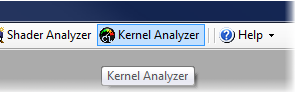
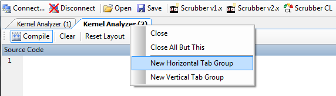
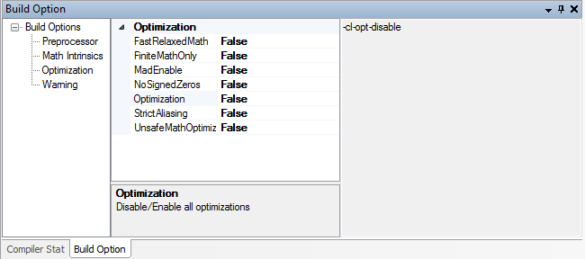
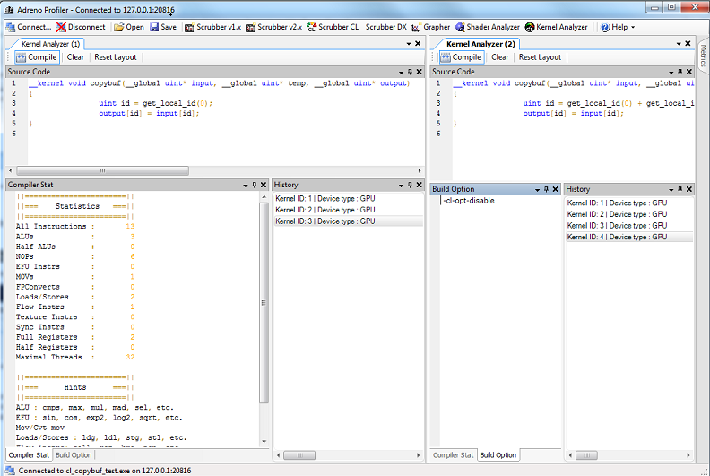

This tutorial explains how to use Adreno Profiler Kernel Analyzer to develop and optimize OpenCL kernels.
First:
 Connect
to an OpenCL application running on your mobile device.
Connect
to an OpenCL application running on your mobile device.
 Open up a Kernel Analyzer window in Adreno Profiler
Open up a Kernel Analyzer window in Adreno Profiler

• If you want to optimize a kernel and compare it at the same time you can open up another kernel analyzer and Right click on the tab->New Vertical Tab Group

Second, write kernel in the source window, click compile to compile your kernel.
• see the compiler stats in the bottom window
• You can open build option tab in the bottom window, select the option, for example, -cl-opt-disable, to set the build options

• Below shows comparing source code and compiler stats in two kernel analyzer instances

Third, if your kernel source is compiled correctly, one or more entry will show up in the history box. If not it will suggest you the compilation error in the Compiler Stat tab.

• You can click on any of your historical items in the history tab to load the source code, extension used and compiler stats for an instant replay.
• You can base you next optimization on any of historical states by clicking that item -> edit you kernel code -> compile
• If you would like to erase too many
historical items, click the Clean above.